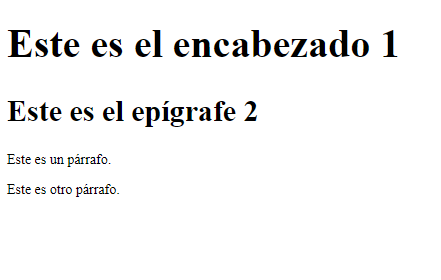
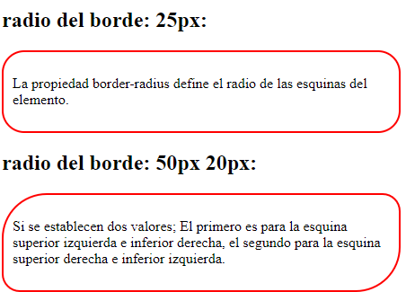
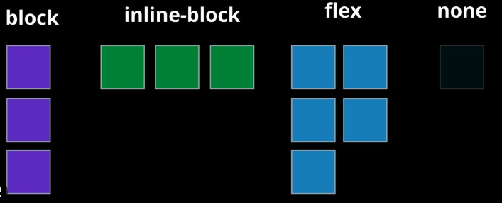
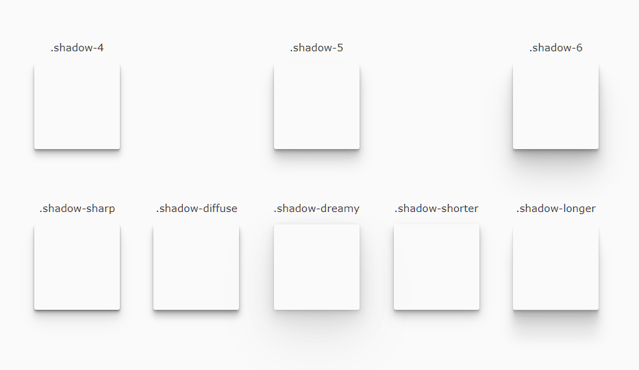
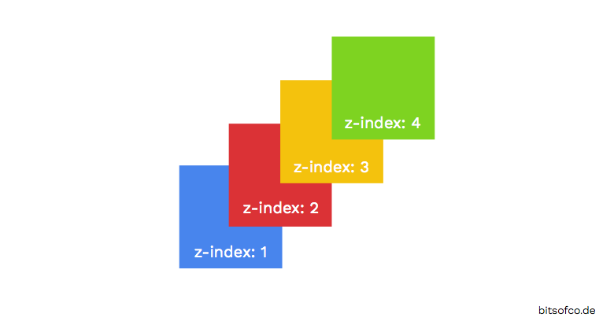
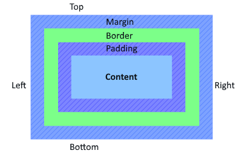
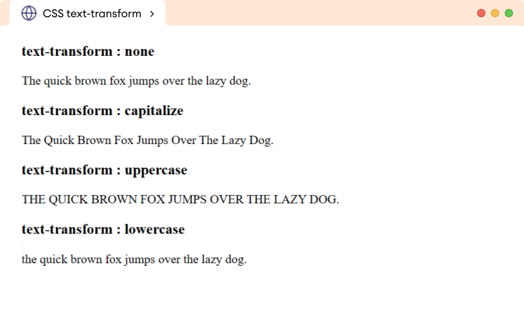
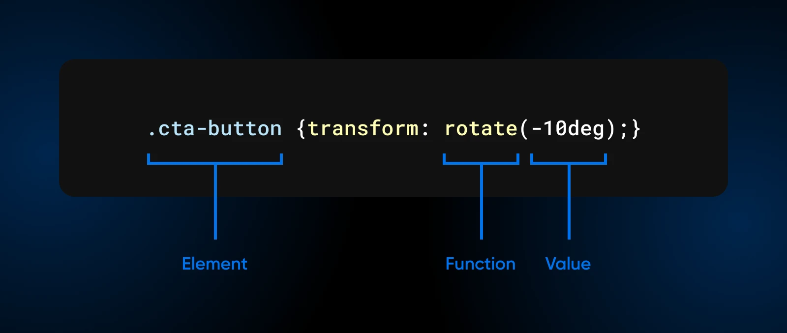
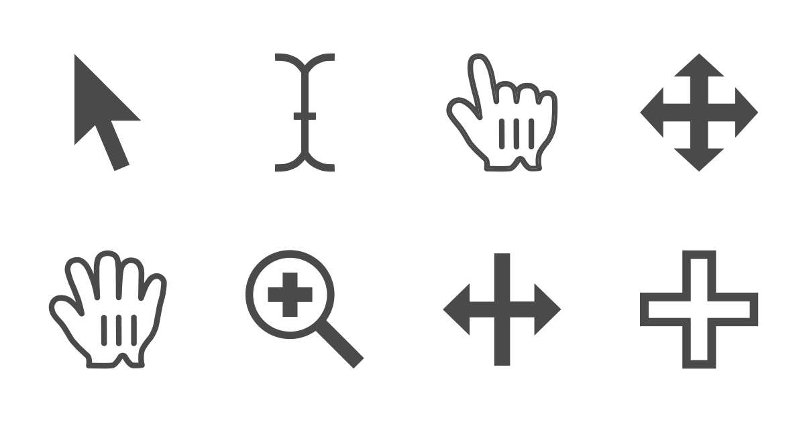

| Nombre del Atributo |
Descripción |
Propiedades |
Valores Posibles |
Ejemplo de Uso |
Imagen Representativa |
Fuente |
| font-size |
Define el tamaño del texto. |
Texto |
px, em, rem, %, etc. |
h1 { font-size: 24px; } |
 |
MDN |
| border-radius |
Redondea las esquinas de un elemento. |
Borde |
px, %, etc. |
div { border-radius: 10px; } |
 |
MDN |
| display |
Define cómo se muestra un elemento. |
Visualización |
block, inline, flex, grid |
div { display: flex; } |
 |
MDN |
| flexbox (display: flex;) |
Define un contenedor flexible para distribuir elementos. |
Flexbox |
grow, shrink, basis |
div { display: flex; } |
 |
MDN |
| position |
Define la posición de un elemento. |
Posición |
static, relative, absolute, fixed |
div { position: absolute; } |
 |
MDN |
| box-shadow |
Agrega una sombra a un elemento. |
Sombra |
offset-x offset-y blur-radius color |
div { box-shadow: 2px 2px 5px gray; } |
 |
MDN |
| overflow |
Controla cómo se muestra el contenido desbordado. |
Desbordamiento |
visible, hidden, scroll, auto |
div { overflow: hidden; } |
 |
MDN |
| z-index |
Controla el orden de apilamiento de los elementos. |
Apilamiento |
número entero |
div { z-index: 10; } |
 |
MDN |
| opacity |
Define la opacidad de un elemento. |
Transparencia |
0 (transparente) a 1 (opaco) |
div { opacity: 0.5; } |
 |
MDN |
| margin |
Establece el espacio exterior de un elemento. |
Espaciado |
px, %, auto, etc. |
div { margin: 10px; } |
 |
MDN |
| padding |
Establece el espacio interior de un elemento. |
Espaciado |
px, %, auto, etc. |
div { padding: 10px; } |
|
MDN |
| text-transform |
Controla la capitalización del texto. |
Texto |
none, capitalize, uppercase, lowercase |
p { text-transform: uppercase; } |
 |
MDN |
| transition |
Define efectos de transición entre estados de un elemento. |
Animación |
property duration timing-function |
div { transition: all 0.3s ease; } |
 |
MDN |
| transform |
Aplica transformaciones como rotación, escalado o traslación. |
Transformación |
rotate(), scale(), translate(), etc. |
div { transform: rotate(45deg); } |
 |
MDN |
| cursor |
Define el tipo de cursor que se muestra al pasar sobre un elemento. |
Interacción |
default, pointer, move, text, etc. |
a { cursor: pointer; } |
 |
MDN |